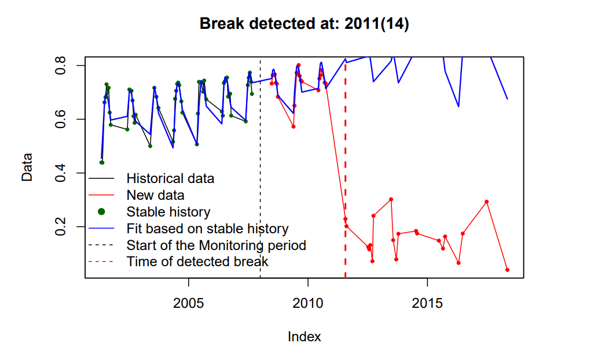
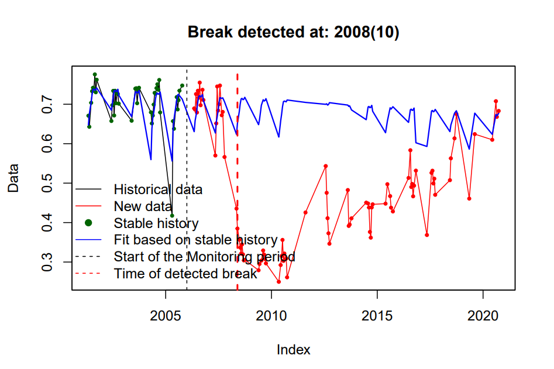
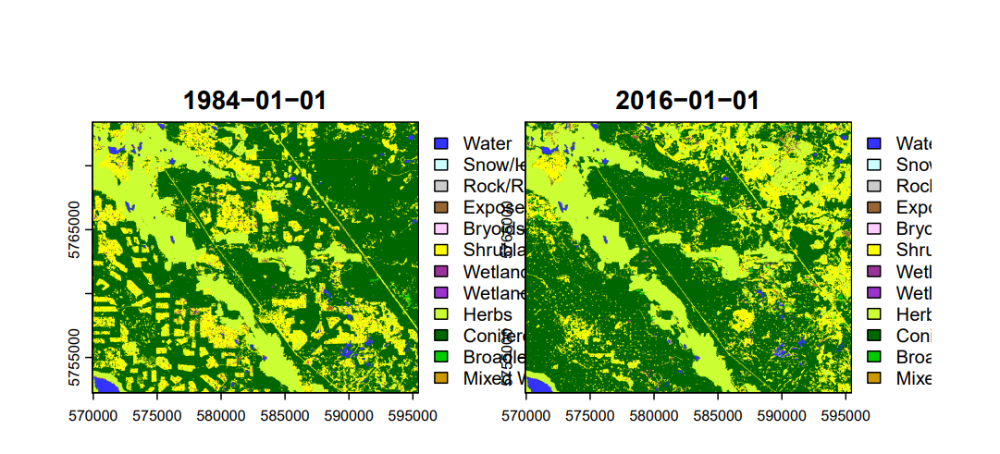
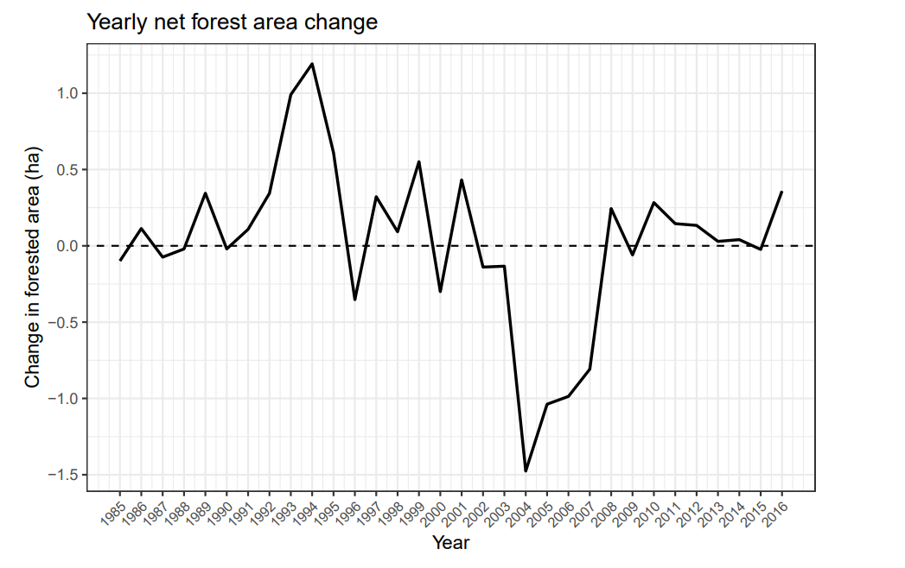
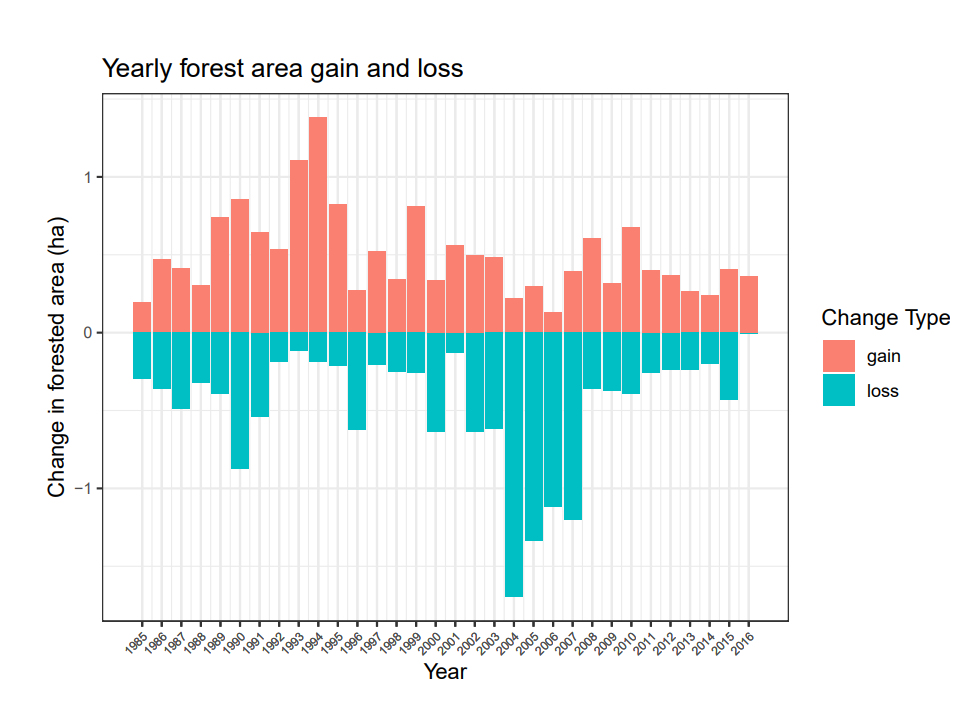

#listing all the ndvi
ndvi_ts <- rast(flist)
names(ndvi_ts) <- date_ts
#mean calculated
ndvi_ts_med <- app(ndvi_ts, fun = median, na.rm = TRUE)
#plotted to show how it looks
plot(ndvi_ts_med,
main = "Median NDVI",
col = terrain.colors(40))
#calling in the shapefile
roi <- vect("data/roi_MOD13Q1.shp")
#checking their crs
crs(roi)
#extracting ndvi's mean here
ndvi_roi <- terra::extract(ndvi_ts, roi,fun= mean, na.rm = TRUE)
#pivoted the table to long and then mutated the columns to look filter it out
ndvi_roi_long <- pivot_longer(ndvi_roi, cols = 2:ncol(ndvi_roi), names_to = "date", values_to = "ndvi") %>%
mutate(date= as.Date(date),year= year(date),month= month(date, label = TRUE),month_digit= month(date))
head(ndvi_roi)
#filter to get the years and months
ndvi_roi_filter <- ndvi_roi_long %>% filter (month_digit >= 5 & month_digit <= 9, year <= 2006)
#summarized it and grouped it by month to know the month with the highest average
ndvi_roi_summary <- ndvi_roi_filter %>% group_by(month) %>% summarise(ndvi_mean = mean(ndvi, na.rm= TRUE))
#ggplot for summarisation
ggplot(ndvi_roi_summary, aes(x = month, y = ndvi_mean, group = 1)) +
geom_point() +
geom_line() +
theme_bw()
#filtering out the roi's
ndvi_roi_A <- ndvi_roi_long %>% filter(ID== 1) %>% select ("ndvi")
ndvi_roi_B <- ndvi_roi_long %>% filter(ID== 2) %>% select ("ndvi")
#creating separate data frames
ndvi_roi_A <- ts(ndvi_roi_A,
frequency = 23,
start = c(2001, 1))
ndvi_roi_B <- ts(ndvi_roi_B,
frequency = 23,
start = c(2001, 1))
#bfast monitoring graphs
bfm1 <- bfast::bfastmonitor(ndvi_roi_A,
start = c(2008,1))
bfm2 <- bfast::bfastmonitor(ndvi_roi_B,
start = c(2006,1))
#plotting the graphs
plot(bfm1)Time series analysis - NDVI and Land use change
Time-series analysis helps reveal how environmental conditions change over time by identifying patterns and disturbances in historical data.
Part 1 - MODIS NDVI time-series analysis
In this project, NDVI time-series analysis was conducted for Yellowhead County, Alberta using MODIS MOD13Q1 imagery from 2001–2020. The BFAST change detection algorithm was applied to identify breaks in the NDVI signal across two areas of interest. By examining vegetation response following each detected break, the analysis provided insight into potential disturbance events and vegetation recovery patterns.
Process MODIS Imagery and plotting BFAST graphs


Area A
A structural change in the NDVI trend was detected in 2011. The continued decline in NDVI values after this point suggests a potential shift in land use, likely indicating a conversion from forested land to agricultural activity.
Area B
A disruption in the NDVI time series was identified in 2008. Because seasonal vegetation patterns gradually reappeared following the break.
Part 2 - Land cover time series analysis
Process imagery
#list of all the vlce files
flist_vlce <- list.files("data/VLCE_TS",
pattern = "tif$",
full.names = TRUE)
#just extracting the ones that come with these filter
fyear <- str_sub(flist_vlce, start = 38, end = 41)
fyear
#filtering them
year_ts <- lubridate::as_date(fyear, format = "%Y")
#listing them in one spatraster
vlce_ts <- rast(flist_vlce)
#putting them into a new dataframe
names(vlce_ts) <- year_ts
#ploted the raster to see side by side
plot(subset(trg_vlce, 1:33))Visual results of how the vegetation changed

Visual representation of Forest Area change
#1
ggplot(forest_change, aes(x = year, y = net_change)) +
geom_line(color = "black", size = 0.8) +
geom_abline(slope = 0, intercept = 0,
linetype = "dashed", color = "black") +
scale_x_continuous(
breaks = forest_change$year,
labels = forest_change$year
) +
labs(
title = "Yearly net forest area change",
x = "Year",
y = "Change in forested area (ha)"
) +
theme_bw() +
theme(
axis.text.x = element_text(angle = 45, hjust = 1, size = 8)
)
#2
ggplot_change <- forest_change %>% mutate(loss = -loss) %>%
pivot_longer(cols = c(gain,loss), names_to = "type",values_to = "change")
ggplot(ggplot_change, aes(x = year, y = change, fill = type)) +
geom_col() +
scale_fill_manual(
name = "Change Type",
values = c("gain" = "salmon", # salmon
"loss" = "#00BFC4") # teal
) +
scale_x_continuous(
breaks = ggplot_change$year,
labels = ggplot_change$year
) +
labs(
title = "Yearly forest area gain and loss",
x = "Year",
y = "Change in forested area (ha)"
) +
theme_bw() +
theme(axis.text.x = element_text(angle = 45, hjust = 1, size = 6), axis.text.y = element_text(size =2)) 

Net Forest Area Change
This figure illustrates the net annual change in forest area between 1985 and 2016. Positive values indicate years where forest gains exceeded losses, while negative values represent years where forest loss dominated.
The largest decline occurred around 2004, indicating a period of substantial forest disturbance.
Forest Area Gain and Loss
This figure separates annual forest gains and losses to better illustrate the dynamics behind the net change. Forest gains (red bars) represent areas of vegetation recovery or regrowth, while losses (blue bars) indicate deforestation or disturbance.
A notable spike in forest loss occurred in the mid-2000s, corresponding with the sharp net decline observed in the previous figure.